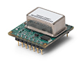
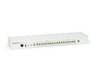
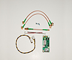

MicroElectronics (Beijing), Inc.
中文版 | English
Products » Accessories

GPSDO N/E series
GPSDO N/E series
GPS lock reference oscillator N200 USRP / N210 series (rev2, 3, 4 and above) and E100 USRP / E110 (rev4 and above) series. Kit includes 1 power cables, 3 serial cables, 3 RF cables and 2 screws that are required to install on N200 USRP / up to series chassis. The application requires the use of an active GPS antenna, which requires a 3 LNA V compatible GPS antenna (not provided).
View Product Details »
Ask the price

GPSDO X series
GPSDO X series
This is oven-controlled, GPS-disciplined crystal oscillator (GPSDO), which is compatible with X300 USRP or X310. It can also use B200 B210 / USRP, but the system requires external power. GPSDO provides high precision 10 MHz and 1 PPS signals, allowing developers to build systems, applications and services to improve the frequency accuracy and global time alignment. We recommend reading the GPSDO Selection Guide to make sure this is the right device for your application.
View Product Details »
Ask the price

GPSDO B series
GPSDO B series
This is GPS-disciplined, a temperature controlled crystal oscillator (GPSDO), which suggests the use of a B200 USRP / B210. GPSDO provides a high precision 10 MHz reference and 1 PPS signal, which allows developers to build systems, applications and services to improve the accuracy of the frequency (75 pounds of unlocking conditions) or global time alignment (50 ns in a locked state). With the OCXO-based version, it is recommended to use X300 USRP / X310, this low power module can be configured using B200 USRP / USB bus-powered B210. We recommend reading the GPSDO Selection Guide to make sure this is the right device for your application.
View Product Details »
Ask the price

Octo Clock-G
OCTOCLOCK8 channel clock distribution module W / integrated GPSDO
OctoClock-G is OctoClock, which includes an upgraded version of the internal disciplned GPS, over controlled crystal oscillator. Like OctoClock-G, the OctoClock provides 8 PPS and 10 MHz outputs.
View Product Details »
Ask the price

Octo Clock
OCTOCLOCK8 channel clock distribution module
The OctoClock is a high precision time frequency reference to allocate an affordable solution. The OctoClock accepts 10 MHz and PPS signals from an external source, and is distributed to each of the 8 signal. This is useful for the user who wants to establish a multi-channel system that is synchronized to a common timing source.
Requires an external 10 MHz PPS /1 source.
Requires an external 10 MHz PPS /1 source.
View Product Details »
Ask the price

GPSDO Kit
USRP GPS-Disciplined Oscillator Kit
Contains USRP lock N200/ N210 GPS series (REV2, 3, 4 and above), and only E100/ E110 USRP (turn 4 and above) series reference oscillator. Kit includes 1 power lines, 3 serial cables (only shown in Figure), 3 RF cables, and 2 screws installed in the N200/ E100 USRP series chassis. For applications that require the use of an active GPS antenna, the module requires a LNA 3V compatible GPS antenna (not provided).
View Product Details »
Ask the price